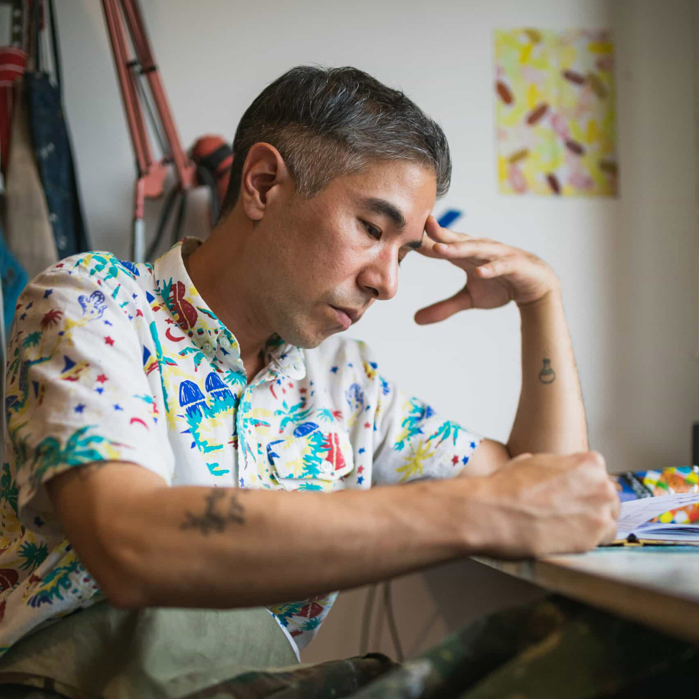

About
Agustín Sirai (La Plata, 1978) es artista visual y docente. Su trabajo se desarrolla principalmente en pintura, con una práctica sostenida en el tiempo que dialoga con la tradición de los géneros pictóricos desde una perspectiva contemporánea.
Ha realizado exposiciones individuales en ARTHAUS Central (2025), Miranda Bosch (2021), Centro de Arte UNLP (2018) y Praxis (Nueva York, 2015), entre otros espacios. Recibió la Beca UADE Artes Visuales 2025 y el 1º y 2º Premio Nacional de Pintura del Banco Central (2011 y 2021).
EN